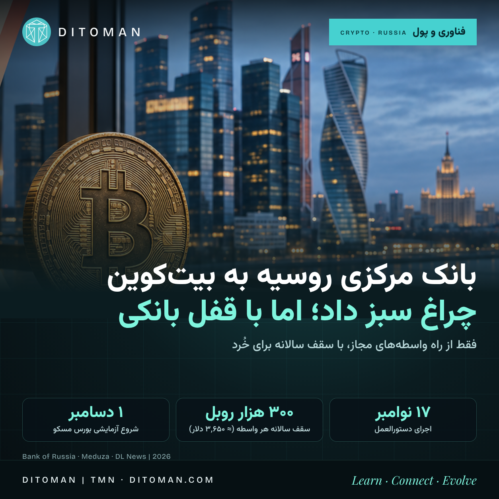

روسیه به معاملهی بیتکوین چراغ سبز داد؛ اما با قفل بانکی
The Bank of Russia has finalised its list for retail crypto trading: Bitcoin, Ether and USDT, through licensed intermediaries only, with a 300,000-ruble annual cap and no self-custody.
Directive takes effect
Annual retail cap per intermediary
Assets allowed for retail
Intermediary-only deadline
روسیه بالاخره درِ قانونی معاملهی رمزارز را برای مردم عادی باز کرد، اما نه به شکلی که در بازار آزاد میشناسیم. بانک مرکزی دستورالعملی را نهایی کرده که طبق آن، از ۱۷ نوامبر ۲۰۲۶ بیتکوین، اتریوم و تتر (USDT) میتوانند از راه واسطههای دارای مجوز، مثل بانکها و کارگزاران، به سرمایهگذار غیرحرفهای عرضه شوند. این خبر بیشتر از آنکه «آزادسازی» باشد، «ورود کنترلشده» است.
۰۱. دقیقاً چه اتفاقی افتاده؟
- بانک مرکزی روسیه دستورالعمل خود را بر پایهی قانون «دربارهی ارز دیجیتال و حقوق دیجیتال» (قانون فدرال ۲۸۲) نهایی و منتشر کرده است. طبق گزارشها، دستورالعمل ده روز پس از انتشار رسمی اجرایی میشود، یعنی ۱۷ نوامبر ۲۰۲۶
- از آن تاریخ بورسها اجازه دارند این سه دارایی را برای معاملهی عمومی بپذیرند
- سرمایهگذار غیرحرفهای فقط همین سه دارایی را میتواند بخرد؛ ملاک انتخاب: ارزش بازار، حجم معاملات روزانه و دستکم پنج سال سابقهی قیمت در بازارهای خارجی. بانک مرکزی گفته: «فقط نقدشوندهترین داراییها در فهرست آمدند»
- سقف خرید: ۳۰۰ هزار روبل در سال تقویمی برای هر واسطه (حدود ۳٬۶۵۰ دلار با نرخ رسمی ۷ نوامبر)
- همهی سرمایهگذاران، حتی حرفهایها، باید پیش از معامله آزمون بدهند و ریسکها را تأیید کنند. سرمایهگذار «واجد شرایط» سقف و محدودیت دارایی ندارد
۰۲. از کی شروع شده؟ خط زمانی
- ۳۱ مارس ۲۰۲۶: دولت بستهی لایحهها را تصویب کرد؛ سقف ۳۰۰ هزار روبل از همانجا مطرح بود
- ژوئیه ۲۰۲۶: دومای دولتی قانون قانونیسازی گردش رمزارز را تصویب کرد
- ۱۱ اوت: بانک مرکزی بیتکوین، اتریوم و تتر را برای معاملهی بورسی تأیید کرد
- ۱ سپتامبر: قانون اجرایی شد
- ۶ تا ۲۲ اکتبر: ثبتنام واسطهها آغاز شد؛ تا ۲۲ اکتبر ۱۷ مبادلهگر ثبت شدند (در شروع چهار تا بودند). اسبربانک در ۱۲ اکتبر به فهرست پیوست
- ۶ نوامبر: انتشار رسمی دستورالعمل نهایی
- ۱۷ نوامبر: اجرای دستورالعمل
- ۱ دسامبر: شروع آزمایشی معاملات در بورس مسکو؛ اسبربانک هم قصد دارد محصولات خود را همان روز عرضه کند (وابسته به آمادهشدن مقررات). ویتیبی هم از نوامبر از طریق اپ سرمایهگذاری و از دسامبر از طریق بورس برنامهریزی کرده
- ۱ ژوئیه ۲۰۲۷: ساکنان روسیه فقط از راه واسطههای ثبتشده میتوانند معامله کنند؛ ۱ سپتامبر ۲۰۲۷: مهلت انطباق کامل واسطههای فعلی
«۱۷ نوامبر» یعنی چه و نه چه. این تاریخ شروع اجرای قاعده است، نه روز باز شدن همهی اپها. بورس مسکو خودش «۱ دسامبر» را برای شروع آزمایشی اعلام کرده و واسطهها هر کدام وقتی آماده شوند وارد میشوند.
۰۳. چه چیزهایی همچنان ممنوع است؟
- پرداخت داخلی: خرید کالا و خدمات با رمزارز در داخل روسیه ممنوع میماند
- کیف پول شخصی: انتقال از حساب دیجیتال واسطه به کیف پول غیرحضانتی (self-custody) برای افراد مجاز نیست؛ یعنی دارایی باید نزد واسطهی دارای مجوز بماند
- معاملهی همتابههمتا (P2P): انتقال میان افراد طبق قانون محدود است و از ۱ ژوئیه ۲۰۲۷ معامله بدون واسطهی مجاز عملاً تمام میشود، از جمله P2P که از حساب بانکی روسی تسویه میشود
- واسطهی بدون مجوز: از ۱ ژوئیه ۲۰۲۷ مجازاتها برای واسطههای بدون مجوز پیشبینی شده، شبیه بانکداری غیرقانونی
در عوض، صادرکنندگان و واردکنندگان میتوانند برای تسویهی برونمرزی از رمزارز استفاده کنند؛ اسبربانک از ۱ سپتامبر پرداخت رمزارزی برای شرکتهای تجارت خارجی با میانگین هزینهی حدود ۰٫۳٪ راه انداخته است.
۰۴. چه کسانی بیشترین بهره را میبرند؟
- بانکهای بزرگ و بورس: چون دارایی باید نزد واسطهی مجاز بماند، اسبربانک، ویتیبی، بورس مسکو و شرکتهایی مثل تی-تکنولوژیز هم کارمزد معامله و هم نگهداری را میگیرند
- دولت و ناظر: هر معاملهی خُرد از بانک و کارگزار میگذرد؛ دید قانونی و مالیاتی بسیار بیشتر از بازار P2P
- تجارت خارجی: مسیر رسمی تسویه با رمزارز برای صادرکننده و واردکننده بازتر میشود
- مردم عادی: بالاخره یک مسیر قانونی دارند، ولی با سقف کوچک: حدود ۲۵ هزار روبل در ماه، معادل تقریباً ۰٫۰۴۸ بیتکوین یا ۱٫۶ اتر با قیمتهای ۶ نوامبر
بازندههای احتمالی: مبادلهگران غیررسمی و معاملهی P2P، و هر کسی که خودنگهداری (self-custody) را میخواهد.
۰۵. چقدر از این معاملات همین حالا وجود دارد؟
بانک مرکزی روسیه در گزارش ثبات مالی خود، پول روسها در صرافیهای متمرکز خارجی را در پایان مارس ۲۰۲۶ حدود ۷۲۰ میلیارد روبل برآورد کرده است. طبق گزارش ForkLog این رقم حدود ۲۳٪ از دو فصل قبل کمتر بود. پس یکی از اولین اثرهای محتمل، انتقال بخشی از معاملات موجود به بازار رسمی است؛ اثر روی بازار جهانی به میزان تقاضای تازه بستگی دارد و فعلاً قابل پیشبینی نیست. (نکته: این رقم ماندهی حسابهاست، نه حجم معامله، و آن را با سقف ۳۰۰ هزار روبل مقایسهی مستقیم نکنید.)
۰۶. این خبر چه مرحلهای از تکامل اکوسیستم را نشان میدهد؟
این برداشت دیتومان است، نه واقعیتی که در دستورالعمل نوشته شده: روسیه از مرحلهی «ممنوع یا خاکستری» وارد مرحلهی «نهادینهسازی» شده، اما نسخهی خاص خودش را انتخاب کرده: اول کنترل، بعد دسترسی. در بسیاری از کشورها، خرید از واسطهی مجاز کنار حق نگهداری شخصی وجود دارد. در الگوی روسی، حضانت نزد واسطه اجباری و راه خارجشدن از سیستم بسته است. نتیجه، بازاری است که رمزارز را به یک «دارایی مالی زیر نظر» تبدیل میکند نه ابزار پرداخت یا استقلال مالی.
۰۷. پرسشهای باز
- طبق تحلیلها، عبارت دستورالعمل «از طریق کارگزار» است، ولی بیانیهی بانک مرکزی سقف را برای مدیران دارایی و مبادلهگران هم میداند. روشن نیست سقف میان چند واسطه جمع میشود یا نه
- زمان دقیق آمادهشدن آزمون و اپ هر واسطه معلوم نیست
- هنوز دیده نشده چه حجمی از معاملهی P2P فعلی به مسیر رسمی منتقل میشود
یادآوری: این متن اطلاعرسانی است، نه توصیهی سرمایهگذاری.
منابع
- Meduza: Russia's central bank approves Bitcoin, Ethereum and USDT for exchange trading (۱۱ اوت ۲۰۲۶) • meduza.io
- DL News: Bank of Russia clears 17 crypto exchangers as Sberbank and VTB ready retail trading (۲۲ اکتبر ۲۰۲۶) • dlnews.com
- CryptoSlate: Moscow Exchange sets Dec. 1 to launch Bitcoin and Ethereum trading • cryptoslate.com
- Blockchain Reporter: Russia opens crypto trading Nov 17 under 300K-ruble cap (۶ نوامبر ۲۰۲۶) • blockchainreporter.net
- ForkLog: Russian capital on foreign crypto exchanges falls to 720 billion rubles (۲ ژوئن ۲۰۲۶، بر پایهی گزارش ثبات مالی بانک مرکزی) • forklog.com
- FinanceFeeds: Russia retail cap set at 300,000 rubles per year (۳۱ مارس ۲۰۲۶) • financefeeds.com
جزئیات دستورالعمل از گزارشهای رسانهای بر پایهی بیانیهی بانک مرکزی آمده؛ متن اصلی بانک مرکزی را مستقیم باز نکردهایم. • Directive details come from media reports of the Bank of Russia statement; we did not open the original text.